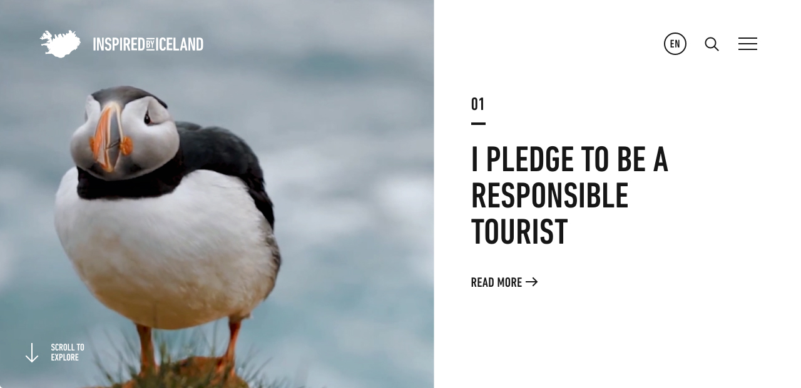

Depuis une décennie, l’Islande vit un boom touristique sans précédent. Ce pays qui est en tête des destinations touristiques les plus convoitées du vieux continent est aujourd’hui débordé par la vague de touristes étrangers qui foule son sol volcanique chaque année.
Mais bien que l'apport à l'économie soit indéniable, les Islandais restent mitigés sur ses bienfaits. Dans une enquête menée en 2017 par l'Icelandic tourist board, 79% des personnes interrogées trouvaient la pression touristique trop forte sur les sites naturels.

Bien que le tourisme responsable et durable soit une notion récente, surtout en Islande, quelques sites commencent à émerger comme étant des endroits incontournables pour ce type de tourisme. Il s'agit notamment de lieux naturels ou de petit village préservé de l'afflux de touriste, de région peu facile d'accès ou encore d'activités permettant de lutter d'une certaine manière contre une industrie (whalewatching). La capitale reste sur cette carte au vu de son rang de "ville verte".
Dès l'entrée sur le territoire via l'aéroport de Keflavik, les visiteurs sont invités à signer le Serment Islandais. Une manière de promouvoir un tourisme responsable et bienveillant.
Les îles Palaos en
Micronésie sont les premières à avoir instauré un engagement moral à ses
touristes en modifiant leurs lois en matière d'immigration. Dès leur entrée,
les visiteurs doivent signer un engagement de passeport à agir de manière
écologiquement responsable sur l’île, dans l’intérêt des enfants des Palaos et
des futures générations. Dans leur engagement, il est mentionné qu’il est de «
notre responsabilité de montrer à nos invités comment respecter notre île, tout
comme il est de leur devoir de respecter l’engagement signé lors de leur
visite.»
Cet enjeu pédagogique a été appliqué en Islande
en juillet 2018 avec le Serment Islandais. L’office du tourisme a lancé une
campagne de sensibilisation. Il s’agit du premier pays au monde à proposer un
accord tacite avec ses visiteurs pour les inciter à avoir un comportement
respectueux. Chaque voyageur est invité à signer cette charte avant de partir à
la découverte de l’île.
A la date de rédaction de ces lignes, 79 219 personnes avaient signée le serment d'être un touriste responsable en Islande.
Promote Iceland, l'office du tourisme Islandaise, a lancé fin 2018 une campagne afin de promouvoir la richesse naturelle, humaine et gastronomique du pays.* Bien qu'explicitement non défini comme une campagne pour le tourisme responsable, cette campagne en reprend les traits afin de rappeler que l'Islande est un pays avec une culture, et qu'il faut la respecter.
created with
Nicepage .